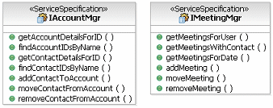

| Tarea: Diseño de mensajes |
|
 |
| Esta tarea describe las acciones necesarias para un modelo de diseño de mensajes completo (catálogo). Trata, como antecedente, los patrones de intercambio de mensajes y la relación del modelo de dominio con el modelo de mensaje. También se describen consideraciones de diseño para la granularidad y el rendimiento de los mensajes. |
| Disciplinas: Análisis y diseño |
|
Relaciones
| Roles | Realizador principal:
| Otras actividades adicionales que realiza:
|
| Entradas | Obligatoria:
| Opcional:
|
| Salidas |
|
| Uso del proceso |
|
Descripción principal
| Los mensajes entre los servicios de comunicación y los componentes son un componente importante de la arquitectura
orientada a servicios.Incluyen no sólo mensajes de entrada y salida de una determinada invocación de servicio sino también
el formato de mensaje interno que se utilizará dentro de la empresa a medida que el flujo de información pase a través de
las capas de la arquitectura de la aplicación. En muchos casos, es recomendable
utilizar un formato de mensaje común.
Como los servicios incluyen mensajes de entrada y salida, esta tarea se centra en:
-
la identificación y especificación del formato y el contenido de los mensajes de entrada y salida de un servicio,
-
su relación con los modelos de datos subyacentes,
-
las consideraciones y el formato de mensaje común, y
-
las decisiones sobre cómo correlacionar uno y otro de estos mensajes.
La especificación de mensajes para el modelo de servicio debería tener en cuenta perspectivas de la arquitectura de
aplicación/arquitectura de empresa, la arquitectura de datos y la arquitectura de integración. Esto incluye:
-
Los estándares de mensaje definidos en un nivel de empresa o de aplicación
-
El modelo de datos o metadatos adecuado que formen parte de una arquitectura de datos
-
Los estándares de transformación de mensajes que forman parte de una arquitectura de integración.
Durante la especificación, es importante entender los estándares de la organización, si están disponibles, en cada una
de las 3 áreas de arquitectura. Las especificaciones de mensaje y los modelos de datos están estrechamente unidos. El
modelo de datos se compone de entidades subyacentes y sus relaciones, un conjunto de las cuales se puede enviar como
parte de un mensaje de salida y ser recibida como entrada de un mensaje entrante. Por tanto, la correlación entre los
formatos de mensaje y la arquitectura de datos o el modelo de datos subyacentes es una consideración arquitectónica
clave. En algunos casos, los patrones y su implementación, caso del Bus de servicio de empresa, pueden manejar la
transformación (y direccionamiento) de mensajes. En muchos casos, puede que necesitemos un manejador explícito para
transformar los mensajes de y a modelos de datos.
En la mayoría de los lenguajes de programación orientada a objetos, la invocación de comportamiento se basa en llamadas
de método o en paradigmas de transporte de mensajes. C++, por ejemplo, utiliza tablas de punteros de función para
invocar el método correcto. Smalltalk, por otro lado, pasa mensajes cuyo destinatario es evaluado en el tiempo de
ejecución. Las soluciones orientadas a servicios están de forma inherente basadas en mensajes y aunque los enlaces a
lenguajes de programación pueden presentar interfaces basadas en el método para los clientes, no es la realidad de la
comunicación con o entre servicios. Otra faceta de la mensajería de servicio es que cada vez más servicios se están
desarrollando con interfaces asíncronas, por contraposición a la naturaleza fundamentalmente síncrona de las llamadas
de método.
En el área de integración de empresa, se ha utilizado con éxito una clase de tecnología durante un número de años: el
Middleware orientado a mensajes (o MOM). Este conjunto de tecnologías está presente en productos como los gestores de
colas y los intermediarios de mensajes. Ha proporcionado a las organizaciones de TI un método flexible, escalable y
sólido para aplicaciones de conexión no estrecha.
Se ha observado que la arquitectura orientada a servicios es una evolución del desarrollo basado en componentes. En
algunos aspectos, esta evolución tiene en cuenta muchas de las lecciones aprendidas a partir del éxito de MOM: cómo
unir no estrechamente sistemas de forma efectiva. La infraestructura de MOM ofrece las siguientes características que
permiten comunicar sistemas para que evolucionen por separado.
-
Cola de mensajes, para entrega fiable de mensajes incluso en el caso de anomalías en la red o el sistema.
-
Direccionamiento de mensajes, tanto desde el punto de vista del direccionamiento en la red, para rendimiento
y fiabilidad, como desde el punto de vista del direccinamiento basado en el contenido del mensaje.
-
Transformación de mensajes, de modo que un servicio de llamada pueda enviar una solicitud de un "producto"
cuando el servicio de recepción pueda aceptar solicitudes de "elementos".
-
Adaptadores de mensajes, para permitir que los sistemas que no se desarrollaron originalmente con interfaces
de MOM sean tratados por servicios compatibles con MOM.
|
Pasos
|
Utilizar estándares de mensaje
Cuando se definen especificaciones de mensaje para los servicios identificados, es importante tener en cuenta los
estándares de mensaje de una empresa, si existen. Allí donde no se definan
estándares de mensaje, resulta aconsejable desarrollarlos. Allí donde existan esquemas de mensaje industriales, se
recomienda aprovecharlos. Por ejemplo, se han definido especificaciones de
mensajería XML para sectores relacionados con las finanzas, la dirección, los viajes (OTA XML [Open Travel Alliance, http://www.opentravel.org/online_schema.cfm]) y las
comunicaciones. Además, existen esquemas específicos no industriales
disponibles en OAGIS [Open Applications Group, http://www.openapplications.org/index.htm].
Formato
de mensaje común
Los mensajes comunes hacen referencia a mensajes que se han transferido por los niveles de una arquitectura de nivel n.
Normalmente, se captura la información de la interfaz de usuario, enviada
a través de un nivel del controlador, procesada en las capas empresariales o de aplicación y, a continuación, pasadas a
una capa de persistencia o un sistema heredado de fondo. Durante cada una
de estas transferencias, se intercambia un mensaje entre los niveles en que cada uno puede tener un formato diferente.
La cuestión clave es acordar un estándar para un formato de mensaje común
dentro de la empresa, de modo que se pueda superar cualquier sobrecarga de traducción de formato allí donde no se
utiliza un bus de servicio de empresa (ESB) o si su uso se considera caro desde el punto de vista de la traducción de
formato. El uso de un ESB cuidará de muchas de estas mediaciones,
transformaciones y direccionamiento. Ésta es la capa de integración tal
como se describe en el modelo de capas de la arquitectura orientada a servicios.
En algunos casos, puede bastar acordar los formatos de mensaje de entrada y salida. El asunto de un formato de mensaje común es una decisión arquitectónica clave:
puede decidir "hacer el suyo propio" tal como se especifica aquí, adoptar modelos de la industria como el XML OTA del
sector de los viajes o adoptar modelos específicos que no sean de la industria como aquellos definidos por OAGIS. En algunos casos, la decisión será utilizar un formato de mensaje de empresa
común que actualice campos del mensaje y lo pase al siguiente nivel para un posterior proceso. Si dicho esquema común no se puede alcanzar debido a factores políticos,
entonces podrán designarse adaptadores que traduzcan los mensajes a un formato de mensaje común. También se pueden aprovechar como parte de un ESB.
Consideraciones
sobre ISV :
Los mensajes que invocan servicios realizados dentro de paquetes de ISV puede que deban aumentarse con atributos de
datos para satisfacer restricciones dentro del modelo de datos de paquete de ISV. Dichos elementos de datos se pueden identificar a través del análisis del
servicio realizado dentro del componente de paquete de ISV o pueden también identificase a través del análisis de
servicio de abajo a arriba de paquetes de ISV. Como puede que estos
atributos no se identifiquen hasta la realización de servicio, puede que deban retroajustarse al mensaje común una vez
identificados.
Formato de mensaje común y arquitectura de datos
En general, los servicios no deberían indicar nada sobre los modelos de datos
subyacentes. Más bien, deberían utilizarse para encapsular los modelos de
datos subyacentes cuyos almacenes de datos sean aprovechados por los componentes de servicio que realizan los
servicios. Por tanto, los servicios que sean ver, editar, suprimir, añadir
búsqueda y otras operaciones de una base de datos pueden no ser buenos candidatos pero podrían utilizarse como
operaciones de componente subyacente tal como se utilizan hoy en día.
Las arquitecturas de datos existentes
que definen modelos de datos conceptuales, lógicos o físicos son orígenes necesarios en la definición de formatos de
mensaje comunes. Las definiciones de formatos de mensaje común deberían
coordinarse con esfuerzos de arquitectura de datos y modelos de datos.
Este análisis garantizará la disponibilidad de los almacenes de datos y los esquemas adecuados para los componentes de
servicio que ejecutarán nuevos servicios. La arquitectura de datos
existente será mejorada para que contenga nuevos servicios si es necesario añadir nuevos datos a los sistemas
subyacentes.
En muchas empresas, los sistemas
existentes a menudo reflejan la existencia de silos e islas de datos que colaboran a través de los procesos de
lote. La migración desde almacenes de datos aislados es posible a través
de los servicios. La identificación de orígenes de datos de un proveedor
de servicios se realiza durante la realización de servicio.
Consideraciones sobre ISV: El modelo de datos lógico necesita contener los
modelos de datos predefinidos, a menudo implícitos, incorporados en los paquetes de ISV. Por tanto, debe producirse la transferencia de mensajes entre aplicaciones
empaquetadas y los modelos de datos existentes. Esto se lleva a cabo a
menudo a través de API ofrecidas por los ISV. En una arquitectura orientada
a servicios, los adaptadores de estos modelos de datos de ISV se convierten en algo importante, especialmente si el ISV
no expone sus datos y funciones subyacentes a través de servicios.
Tenga en cuenta que en algunos casos
en los que el modelo de datos de ISV es accesible, se puede personalizar el modelo para que contenga los mensajes
necesarios para dar soporte a los servicios identificados. A la inversa,
si el modelo de datos no es accesible, la mensajería de servicios puede estar limitada por el modelo de datos contenido
dentro del ISV. Se puede emplear también un mecanismo de mediación para
atajar el problema. La mediación, como es el caso de la suministrada por
un ESB, se puede utilizar en este contexto para dar soporte a la comunicación con paquetes de ISV. El modelo de datos de ISV también puede dictar atributos adicionales que sean
necesarios más allá de los requeridos para implementar el servicio.
Formato de mensaje común con todos
los servicios relevantes
Los
formatos de mensaje común deben estar reconciliados con los mensajes de entrada/salida de los servicios individuales,
de modo que estén relacionados y asignados para permitir que los servicios adecuados los utilicen y actualicen cuando
sea necesario. Puede que los servicios necesiten extraer información o
esperar resultados del formato de mensaje de empresa. Éstos se documentan
en la plantilla Formato de mensaje común de servicio.
|
Reutilización del modelo de dominio
En el concepto Concepto: Diseño de dominio, se describió la noción de modelado de dominio, parecida
a la noción de modelo de análisis o modelo de análisis empresarial en la representación de conceptos centrales del
dominio empresarial sin dependencia de la tecnología. Resulta claro que los mensajes utilizados por los servicios son
conscientes de la tecnología (si no específicos de tecnología en el caso del esquema XML utilizado para servicios web),
de la misma forma que el esquema de base de datos utilizado para almacenar los datos de dominio es tecnología
específica del servicio. De hecho, podemos tener en cuenta la siguiente relación.
Esto muestra la relación entre el modelo de dominio usado para el descubrimiento de elementos de dominio clave y el
modelo de mensaje como realización del modelo de dominio como conjunto de elementos transferido a los servicios y
devuelto por ellos.
A continuación se muestra un típico modelo de componente/Java en el que podemos observar la separación de la interfaz
de la clase y la inclusión de funciones de "objeto usuario" para obtener y establecer el valor de las variables de
estado. Se trata de un enfoque muy común, pero cuenta con la desventaja de que, si el cliente y el componente están en
espacios de dirección diferentes o en una máquina distinta, el coste de comunicar cada llamada es alto en términos de
acceso al estado global de cualquier componente.
Otro problema es la relación entre componentes, la noción de que una cuenta tiene un conjunto de clientes es difícil de
desarrollar en este estilo y normalmente concluye con la gestión de listas de identificadores utilizados para recuperar
objetos individuales.
Al desarrollar un modelo de servicio podemos utilizar un enfoque de identificación de servicio controlada por datos que nos lleve a la
especificación de un servicio AccountMgr y un servicio MeetingMgr. La primera especificación de servicio actúa como
ubicación central para gestionar cuentas y contactos. De hecho, el modelo de datos central para las soluciones de
Gestión de relaciones con los clientes (CRM) se creó utilizando éste y otros servicios. El segundo servicio se ha
separado porque puede ser utilizado por las soluciones de CRM y otras soluciones para reservar reuniones y relacionarse
con las aplicaciones Groupware de la empresa.
A continuación se muestra un ejemplo del modelo; enseña las especificaciones de servicio, los mensajes se pueden asumir
a partir del modelo de dominio anterior.

|
Comprender los patrones de intercambio de mensajes
Cuando se piensa en los mensajes, existe una tendencia natural a considerarlos simplemente parámetros de las
operaciones. Esto se hace probablemente porque la representación de UML de servicios utiliza operaciones con parámetros
y el Lenguaje de descripción de servicios web (WSDL 1.1) utiliza un enfoque parecido. No obstante, cuando se piensa en
términos de servicios y especificaciones de servicio, resulta más útil pensar que los
mensajes son elementos reutilizables producidos o utilizados/consumidos por una operación de servicio. En el habla de
los servicios, la operación simplemente se convierte en un intercambio de mensajes, si bien es cierto que un
intercambio con nombre de un servicio es distinguible de otro intercambio que pueda utilizar los mismos mensajes de
entrada y salida.
La noción de patrón de intercambio de mensajes ha sido de interés en el mundo de los estándares de servicios
web, como parte de un análisis del uso de servicios en el desarrollo de estándares para dar soporte a su
especificación.Un patrón de intercambio de mensajes nombra una combinación particular de mensajes producidos, usados o
consumidos entre dos servicios (o entre un servicio y un cliente) y proporciona un vocabulario a diseñadores de
servicios para describir operaciones en especificaciones de servicio.
A continuación se muestran patrones de intercambio comunes que se pueden utilizar en la definición de especificaciones
de servicio. Dichos patrones se encuentran normalmente durante el modelado de colaboraciones de servicio.
Solicitud/Respuesta síncrona: Se trata en efecto de una invocación de método tradicional en la que el cliente de
servicio envía un mensaje a un servicio y, a continuación, bloquea la espera hasta que se recibe una respuesta del
servicio.

Mensaje de una dirección: En este caso, el cliente simplemente envía un mensaje al servicio, no esperando una
respuesta. Este patrón se puede considerar una llamada de método asíncrona sin tipo de respuesta, lo que significa que
el cliente de servicio continúa la ejecución después de que el mensaje se haya enviado, en lugar de esperar que el
servicio procese el mensaje.
Notificación: En este caso, el servicio es responsable de devolver mensajes al cliente (normalmente otro
servicio). Para conseguirlo, el cliente debe estar de alguna forma registrado en el servicio, de modo que el servicio
sepa dónde enviar los mensajes de notificación.
Solicitud/Respuesta asíncrona: Se trata de una combinación del mensaje de una dirección y la notificación. El
cliente del servicio envía un mensaje, incluyendo una dirección a la que responder. Cuando el servicio completa su
proceso, vuelve a llamar al originador. El hecho de que los clientes de servicio envíen el primer mensaje de forma
asíncrona los obliga a realizar un seguimiento de todas las solicitudes enviadas, de modo que las respuestas, cuando se
reciben del servicio, puedan correlacionarse con la solicitud original.
Publicar/suscribir: Se trata de nuevo de una combinación. Un cliente de servicio registra interés en un "tema"
con un servicio de publicación. Otros servicios o clientes de servicio publican mensajes (envían mensajes) al servicio
de publicación identificando el tema asociado con el mensaje. Si el tema coincide con clientes anteriormente
registrados, se les notificará el nuevo mensaje. En este caso es posible acoplar no estrechamente los servicios que
participan. Cualquier cliente o publicador sólo necesita conocer la ubicación del servicio de publicación y se pueden
añadir nuevos clientes a la solución sin realizar un esfuerzo importante.
|
Gestionar granularidad de mensajes
Los servicios tienen como objetivo proporcionar operaciones de gran granularidad. De esta forma, los mensajes que
fluyen dentro y fuera de tales operaciones tienden también a tener mayor granularidad. Este problema se resaltó
originalmente pronto en el desarrollo de soluciones de servicio web en las que el uso de HTTP como transporte, SOAP
como protocolo y XML como formato de conexión tendía a producir respuestas relativamente lentas y requisitos de banda
ancha altos. Por ejemplo, consideremos una solicitud para una oferta de acción de un servicio. Una oferta de acción
simple se mostró a menudo en los primeros días de los servicios web. El símbolo de denominación abreviada es cuatro
caracteres y la respuesta es un número decimal. En un estilo RPC, protocolo binario, podemos esperar que el
identificador de mensaje añada alguna carga, digamos 8 bytes, y por tanto podemos esperar en algún sitio de la región
de 8+4 para la solicitud y 8+8 (para un decimal de precisión alta) de respuesta. Con HTTP/SOAP, podemos esperar algo de
la siguiente forma:
|
Solicitud
|
Respuesta
|
SOAPAction: "http://www.webservicex.net/Quote"
User-Agent: MyAgent 1.0
Content-Type: text/xml; charset=UTF-8
<?xml version="1.0" encoding="UTF-8"?>
<soap:Envelope
xmlns:soap="http://schemas.xmlsoap.org/soap/envelope/"
xmlns:tns="http://www.webservicex.net/">
xmlns:xs="http://www.w3.org/2001/XMLSchema">
<soap:Body>
<tns:Quote>
<tns:Symbol>IBM</tns:Symbol>
</tns:Quote>
</soap:Body>
</soap:Envelope>
|
HTTP/1.1 200 OK
X-Powered-By: ASP.NET
Connection: close
Content-Length: 522
X-AspNet-Version: 1.1.4322
Date: Mon, 21 Mar 2005 00:34:21 GMT
Content-Type : text/xml; charset=utf-8
Server : Microsoft-IIS/6.0Cache-Control: private, max-age=0
<?xml version="1.0" encoding="utf-8"?>
<soap:Envelope
xmlns:soap="http://schemas.xmlsoap.org/soap/envelope/">
xmlns:xsi="http://www.w3.org/2001/XMLSchema-instance">
xmlns:xsd="http://www.w3.org/2001/XMLSchema">
<soap:Body>
<QuoteResponse xmlns="http://www.webservicex.net/">
<Quote><Last>89.28</Last>
</Quote>
</QuoteResponse>
</soap:Body>
</soap:Envelope>
|
Las personas que pronto adoptaron tecnología de servicio web llegaron a dos conclusiones. Primero, los servicios se
optimizarón en un pequeño número de operaciones que suministraban datos como documentos en lugar del estilo más
complejo de modelos de componente tradicionales. Esto tiene la ventaja de amortizar la carga de los protocolos de una
carga útil de datos reales más grande. Igualmente, entre servicios de una empresa, al menos entre servicios de la misma
solución, se eligieron enlaces de protocolo más pequeños y simples y se reservó HTTP/SOAP para situaciones en las que
era necesario, caso de conexiones con servicios externos a la empresa.
Esta noción no es enteramente nueva. Incluso en el mundo de los componentes, el patrón Objeto de valor, o la Fachada de
servicio J2EE son enfoques para reducir el número de comunicaciones directas e inversas entre cliente y servidor. Ambos
utilizan la noción de enviar una copia completa del estado de componente al cliente en lugar de utilizar las funciones
de objeto usuario tradicionales. Para los servicios, también podemos considerar el hecho de que los que se están
desarrollando están más estrechamente alineados con los modelos de empresa, en especial con los modelos de proceso
empresarial. De esta forma, los mensajes vienen a reflejar documentos de empresa comunes de la misma forma que los
conjuntos de transacciones EDI (intercambio de datos electrónico) representan documentos empresariales como pedidos,
facturas, avisos de envío, etc.
|
Gestionar el rendimiento del intercambio de mensajes
En general, el uso de mensajes grandes es válido en la superación del rendimiento de las comunicaciones, aunque en
algunos casos los mensajes de datos grandes pueden ser un problema. Por ejemplo, en los mensajes de SOAP anteriores,
vimos cómo el tamaño de mensaje, utilizando HTTP, SOAP y XML aumentó considerablemente el tamaño de los datos. Se trata
de una queja frecuente en los sistemas anteriores creados con tecnologías de servicios web. Por otro lado, estos
problemas nos han permitido aprender algunas lecciones interesantes como la consideración del rendimiento desde el
punto de vista del rendimiento de código, el diseño de mensajes y la opción de protocolo como una actividad de diseño
temprana.
Un aspecto importante que debe tenerse en cuenta es que cuando movemos grandes trozos de estado de servicio a cliente o
de cliente a servicio, estos mensajes representan realmente instantáneas obsoletas del estado de servicio. Por tanto,
una de las consideraciones es gestionar explícitamente esta condición de "obsoleto" identificando el tiempo que los
datos se pueden considerar fiables o darlo en "usufructo" al cliente de modo que caduque después de un determinado
tiempo. Para obtener más información, consulte la documentación técnica Uso de
arquitectura orientada a servicios y desarrollo basado en componentes para crear aplicaciones de servicio web.
Otro tema que debe tenerse en cuenta es el almacenamiento en caché del contenido. El almacenamiento en caché es
normalmente un problema que se soluciona con una optimización del rendimiento de las aplicaciones, pero en una solución
orientada a servicios, la naturaleza distribuida y la comunicación basada en mensajes se presta bien a la inserción de
cachés entre clientes y servicios. Estas memorias caché no son las típicas memorias caché de base de datos utilizadas
para optimizar consultas sino más bien cachés utilizadas en servidores web y proxies web. De hecho, en el caso de los
servicios web que utilizan HTTP y SOAP, estos proxies se pueden utilizar como memorias caché para ofrecer respuestas de
servicio en determinadas situaciones.
No obstante, el problema, en relación con el uso de alguna memoria caché, es realmente cómo entiende la memoria caché
las políticas utilizadas para ofrecer contenido de la caché y cómo un servicio puede invalidar la memoria caché. La
infraestructura técnica utilizada para alojar y gestionar servicios desplegados debería proporcionar funciones de
almacenamiento en caché. Un área de política de servicio que esperamos ver en el futuro es el suministro de información
sobre gestión de memoria caché.
|
|
Más información
© Copyright IBM Corp. 1987, 2006. Reservados todos los derechos.
|
|